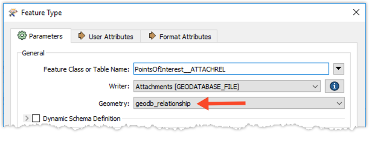

After completing this unit, you’ll be able to:
Geodatabase relationship classes are used to manage the relationships between features in one feature class with features in another. Attributed and non-attributed relationship classes can be read and written with FME. Relationships are not rows in a table or feature class like other features, but linkages through the primary and foreign key values of an origin and destination feature.
“Origin” features belong to the “Origin Table/Feature Class” specified when creating the relationship class in ArcCatalog, while “destination” features belong to the “Destination Table/Feature Class”.
Relationship classes can be simple or composite, as well as attributed or non-attributed.
For more information regarding relationships in ArcGIS, please refer to: https://desktop.arcgis.com/en/arcmap/10.7/manage-data/relationships/relationships-and-arcgis.htm
Note that the Esri File Geodatabase reader/writer used/mentioned in this article requires a licensed version of ArcGIS.. For more information on required ArcGIS license levels, please see Required ArcGIS License Types for FME Geodatabase Formats. The Comparison of FME readers and writers for SDE and Geodatabase may also be useful.
Simple vs. Composite:
In a “Simple” Relationship class, features can exist independently of each other – for example, a feature can exist without necessarily having an attachment, and any attachment can be deleted without affecting the feature.
In a “Composite” Relationship class, origin and destination objects are more closely connected. If a feature were deleted so too would be the related attachment record.
Attributed vs. Non-attributed:
In a non-attributed relationship, the relationship class is contained in a non-spatial table that only contains the origin and destination feature keys.
In an attributed relationship, the relationship class is contained in a non-spatial table with more attributes than just the identifying keys.

When reading a relationship class, both the origin and destination feature classes must be read at the same time as the relationship class. A relationship feature type shows an allowed geometry of either geodb_relationship or geodb_attributed_relationship.

Each relationship feature has the following Format Attributes stored on it when read from a relationship class:
These attributes can be used to identify relationships between the origin and destination features within the workspace. These attributes are used for FME’s processes, as format attributes, and do not appear in the final written output.
Note that reading from relationship classes is very slow since each relationship is validated when read. Because this functionality is not often required, FME includes a parameter that, by default, turns off relationship reading to improve performance. Therefore, to read relationship classes you must first locate and deactivate the "Ignore Relationship Info" parameter.

Relationship classes cannot be created through FME and must be set up through ArcGIS prior to running the translation. Once the relationship has been defined in ArcGIS, the following attributes must be stored on features written to a relationship class table in FME (this only relates to M:N and attributed relationships because you interact with the relationship table directly):
The following attribute must be stored on features written to the origin and destination feature classes/tables which participate in the relationship (this applies to all types of cardinality (1:1, 1:M, M:N and attributed)):
Note:
Required attributes for writing to relationship classes:
| Object | Required Attributes |
| Origin feature class or table | geodb_oid geodb_feature_has_relationships = yes |
| Destination feature class or table | geodb_oid geodb_feature_has_relationships = yes |
| Relationship class | geodb_rel_origin_oid geodb_rel_destination_oid geodb_type = geodb_relationship or geodb_attributed_relationship Table Handling: Use Existing |
For example, if an origin feature has geodb_oid = 1 and a destination feature has geodb_oid = 2, the feature written to the relationship table must have these attributes:
geodb_rel_origin_oid = 1
geodb_rel_destination_oid = 2
Note that features participating in an attributed relationship can be inserted, updated and deleted. But features participating in a non-attributed relationship can only be inserted and deleted. Because attributed relationships have intermediate tables associated with them, the attributes of the intermediate table (excluding key values), may be updated by providing an RID (relationship id) as an update/key field.
Relationship Keys
In a geodatabase, the relationship keys do not have to be of type Object ID (integers). They could be a GUID for example. In this case, it's tempting to load the foreign key attributes in the relationship. You don't need to do this. You only need to set the values of geodb_rel_origin_oid & geodb_rel_destination_oid. The FME Geodb writer will populate the relationship feature class foreign keys.
Use only one Geodatabase writer: Be careful if you have more than one Geodatabase writer in your workspace. The origin and destination feature classes (or tables) that participate in the relationship and the relationship class must be written by the same Geodatabase writer (i.e. you cannot write to feature classes with one Geodatabase writer and to relationship classes with another).
Sometimes, the data in the origin and destination feature classes already exists and you just want to add the relationships to the relationship table. You can do this if:
- the relationship is M:N or an attributed relationship
- the relationship class already exists in your geodb
Set the geodb_type to geodb_relationship or geodb_attributed relationship (if attributed) and the geodb_rel_origin_oid and geodb_rel_destination_oid to their respective OBJECTID's. This does require that FME reads the feature classes which participate in the relationship but does not involve writing them out again. Only the relationship table needs to be written to in this case.
Relationships must be created using the ArcGIS tools, as they cannot be created in FME.
1:1, 1:M non-attributed relationships: These have no intermediate table for keeping track of relationships. They are linked using a primary (origin table) and foreign (destination table) key.
M:N and any 1:1, 1:M or M:N attributed relationships: Separate tables are used to keep track of the relationships. In order to track these relationships, each relationship entry contains a unique RID value along with the primary and foreign key.
File Geodatabase and SDE Geodatabase:
1:1, 1:M non-attributed feature classes: If inserting with FME you would either be starting with empty feature classes (because as soon as you create the relationship in ArcMap, the relationship is already completed), or you would be deleting and re-inserting features which participate in the relationship and thus rebuilding that relationship.
File Geodatabase ONLY - not SDE geodatabase:
1:1, 1:M, M:N attributed relationships and M:N non-attributed relationships: If you have populated feature classes and need to insert into the relationship table to populate it, or you want to update or insert attributes in an attributed relationship table, you may simply insert into the relationship table directly without writing to the feature classes which participate in the relationship. This includes the primary/foreign key and/or attributes. The assumption here is you already have a table or some source with those relationships defined. It's probably a less common workflow but it's doable and perhaps a good advanced post or just something we add to one of the articles as an aside. Generally, you will be inserting to both the feature classes and building/inserting into the relationship table at the same time.
SDE Geodatabase:
1:1, 1:M, M:N attributed relationships and M:N non-attributed relationships:
FME may only be used to UPDATE the attributes in an attributed relationship, not the RID, foreign and primary keys. If this is desirable, a DELETE and INSERT operation must be performed.
Currently, there isn’t a way to insert existing relationship attributes into a relationship table with a SDE Geodatabase without reading the features participating in the relationship in order to get the ObjectID. This is in part because populating these relationships in ArcGIS requires the origin and destinations to be picked interactively rather than just defining the relationship. As such, If the features which participate in the relationship classes already exist in the database and only the relation table needs to be populated, the features which participate must still be read. This is required in order to get the ObjectID’s, however these features do not be to be written back. The ObjectID's read from the origin and destination relationship features will need to be renamed to the geodb_rel_origin_oid and geodb_rel_destination_oid respectively in order for the relationship table to be populated.
A little more on deleting records for a relationship class...
You can delete individual records from a relationship class. To do this you can: